Saldos de cartera
Mediante esta función la entidad conoce información acerca de la maduración de su cartera a una fecha determinada de acuerdo con las variables sucursal, marca, líneas de crédito, categorias de clientes, monedas y productos. La información reflejada permite a la entidad hacer un control sobre la calidad en la colocación de productos en el mercado de acuerdo con las variables que desee evaluar.
El formulario contiene la opción Detalle. Adicionalmente, cuenta con un filtro de búsqueda y las opciones: Líneas de crédito, Categorias de clientes, Monedas, Productos, Bines, Segmentos y Grupos de afinidad.

Filtro: Se pueden realizar consultas a través de las siguientes opciones:
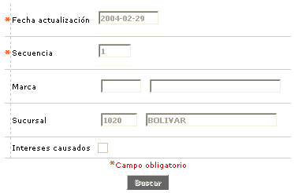
Fecha actualización |
Este campo obligatorio, en formato YYYY-MM-DD, permite a la entidad consultar la información desplegada para una fecha de facturación determinada. |
Secuencia |
Campo obligatorio, en el que se ingres un a dato numérico de 3 dígitos, que corresponde al número de veces que se ha corrido el proceso de actualización en determinada fecha. |
| Marca | En este campo se selecciona de la lista de valores adjunta, la franquicia que se desea consultar. |
| Sucursal | En este campo que contiene lista de valores poblada a través de la opción Estructura organizacional, se selecciona la sucursal que se desea consultar. |
| Intereses causados | Cuando se marca este campo, el sistema despliega la información correspondiente a los intereses generados de las tarjetas radicadas en las diferentes sucursales. |
Detalle: Cuando el usuario invoca esta opción se despliega un formulario con los valores absolutos y porcentuales tanto por saldos como por cantidad, para cada concepto desplegado. Estos valores corresponderán a todas las tarjetas asociadas a la opción seleccionada por el usuario.
Los campos de este formulario son comunes para todas las opciones habilitadas en la parte superior.
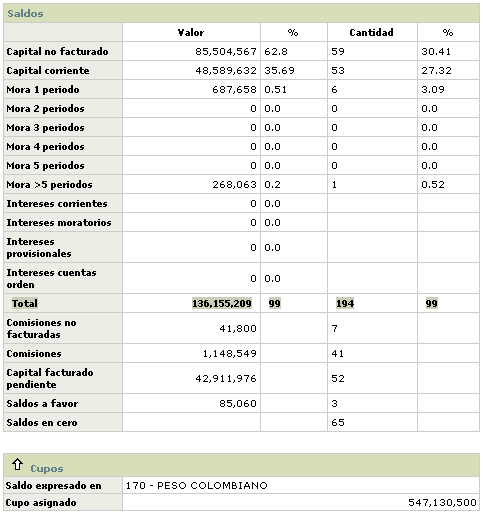
De acuerdo con la oficina previamente seleccionada, en este formulario se muestran los datos del estado de la cartera clasificada por líneas de crédito. Este formulario cuenta con la opción Detalle y con un botón para devolverse a la página principal de Saldos de cartera.
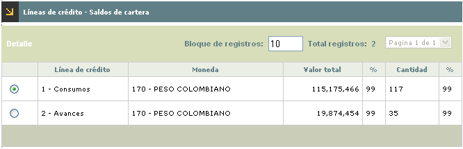
De acuerdo con la oficina previamente seleccionada, en este formulario se muestran los datos del estado de la cartera clasificada por las diferentes categorias de clientes. Este formulario contiene la opción Detalle. Adicionalmente, cuenta con un filtro de búsqueda y con un botón para devolverse a la página principal de Saldos de cartera.
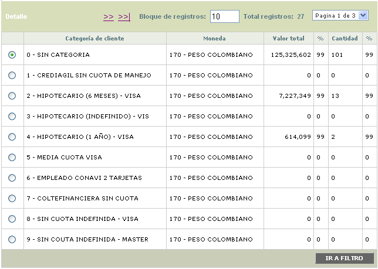
Filtro: Se pueden realizar consultas a través de la siguiente opción:
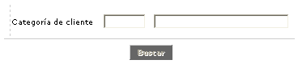
Categoria de cliente |
En este campo se selecciona de la lista de valores adjunta, la categoria de cliente para la cual se desean consultar los saldos. |
De acuerdo con la oficina previamente seleccionada, en este formulario se muestran los datos del estado de la cartera clasificada por las diferentes monedas. Este formulario cuenta con la opción Detalle y con un botón para devolverse a la página principal de Saldos de cartera.
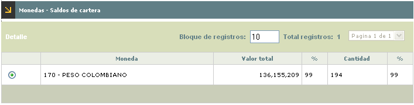
De acuerdo con la oficina previamente seleccionada, en este formulario se muestran los datos del estado de la cartera clasificada por los diferentes productos. Este formulario contiene la opción Detalle. Adicionalmente, cuenta con un filtro de búsqueda y con un botón para devolverse a la página principal de Saldos de cartera.
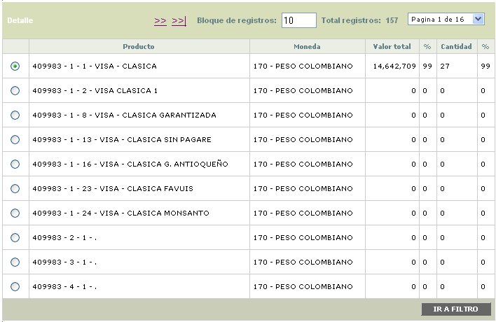
Filtro: Se pueden realizar consultas a través de la siguiente opción:
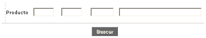
Producto |
En este campo se selecciona de la lista de valores adjunta, el producto para el cual se desean consultar los saldos. |
De acuerdo con la oficina previamente seleccionada, en este formulario se muestran los datos del estado de la cartera clasificada por los diferentes bines correspondientes a los productos existentes. Este formulario contiene la opción Detalle. Adicionalmente, cuenta con un filtro de búsqueda y con un botón para devolverse a la página principal de Saldos de cartera.
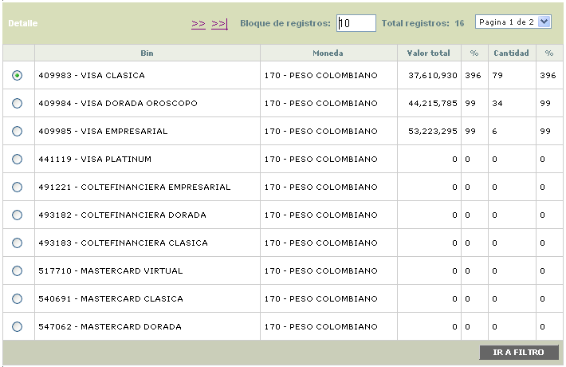
Filtro: Se pueden realizar consultas a través de la siguiente opción:
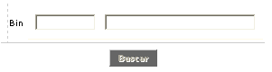
Bin |
En este campo se selecciona de la lista de valores adjunta, el bin para el cual se desean consultar los saldos. |
De acuerdo con la oficina previamente seleccionada, en este formulario se muestran los datos del estado de la cartera clasificada por los diferentes segmentos correspondientes a los productos existentes. Este formulario contiene la opción Detalle. Adicionalmente, cuenta con un filtro de búsqueda y con un botón para devolverse a la página principal de Saldos de cartera.
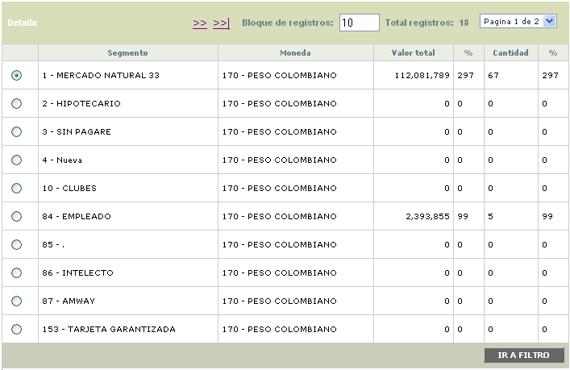
Filtro: Se pueden realizar consultas a través de la siguiente opción:
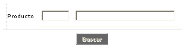
Segmento |
En este campo se selecciona de la lista de valores adjunta, el segmento para el cual se desean consultar los saldos. |
De acuerdo con la oficina previamente seleccionada, en este formulario se muestran los datos del estado de la cartera clasificada por los diferentes grupos de afinidad correspondientes a los productos existentes. Este formulario contiene la opción Detalle. Adicionalmente, cuenta con un filtro de búsqueda y con un botón para devolverse a la página principal de Saldos de cartera.

Filtro: Se pueden realizar consultas a través de la siguiente opción:

Grupo de afinidad |
En este campo se selecciona de la lista de valores adjunta, el grupo de afinidad para el cual se desean consultar los saldos. |